Results
Below are the results of the colorization algorithm on all provided example images, along with the calculated offsets for each color channel:
Cathedral

Green: (5, 2), Red: (12, 3)
Church
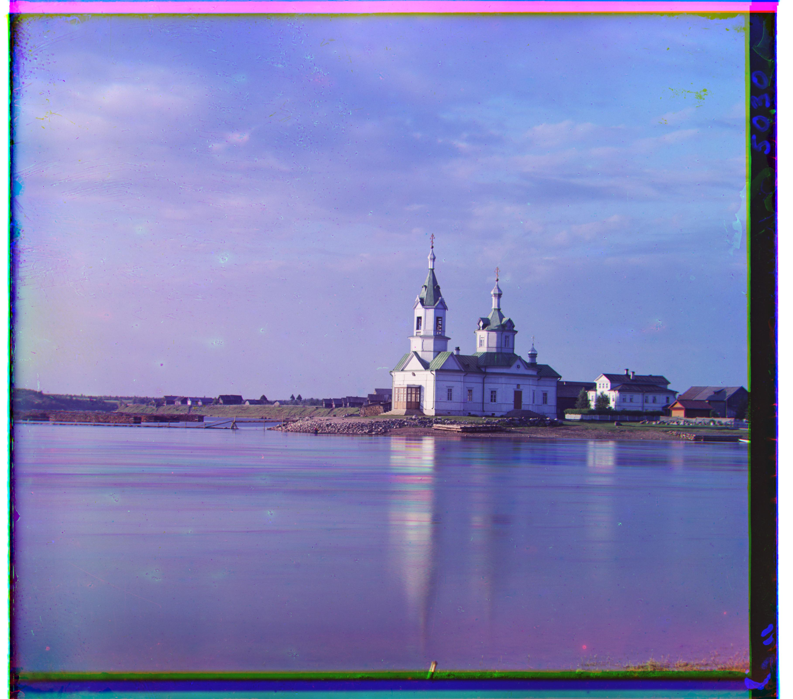Green: (25, 3), Red: (58, -5)
Emir
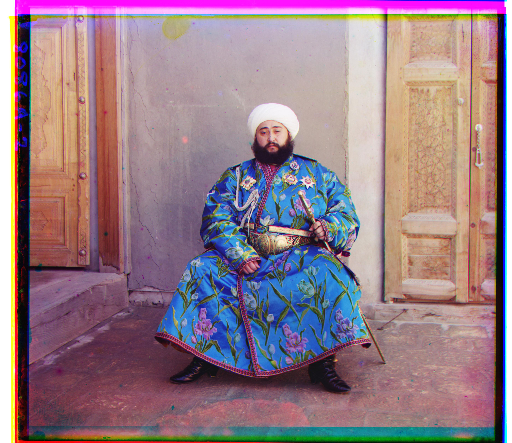Green: (49, 24), Red: (103, 43)
Harvesters
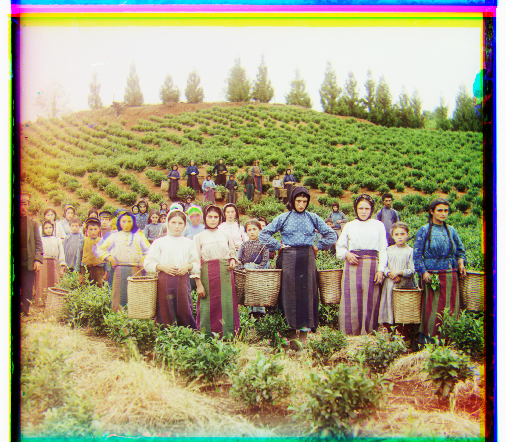Green: (60, 16), Red: (124, 13)
Icon
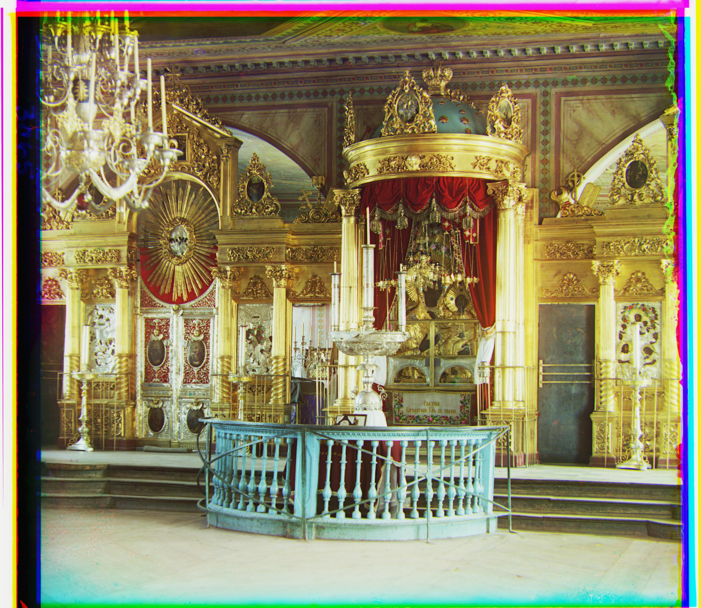Green: (41, 17), Red: (89, 23)
Italil
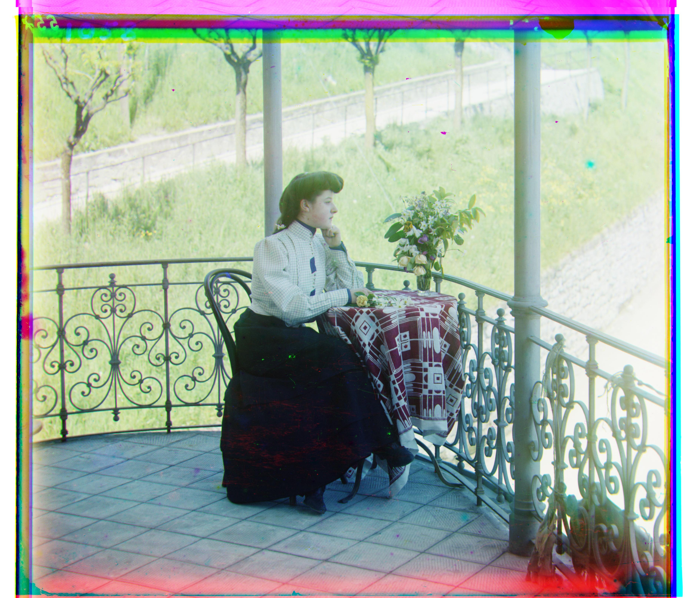Green: (38, 21), Red: (77, 35)
Lastochikino
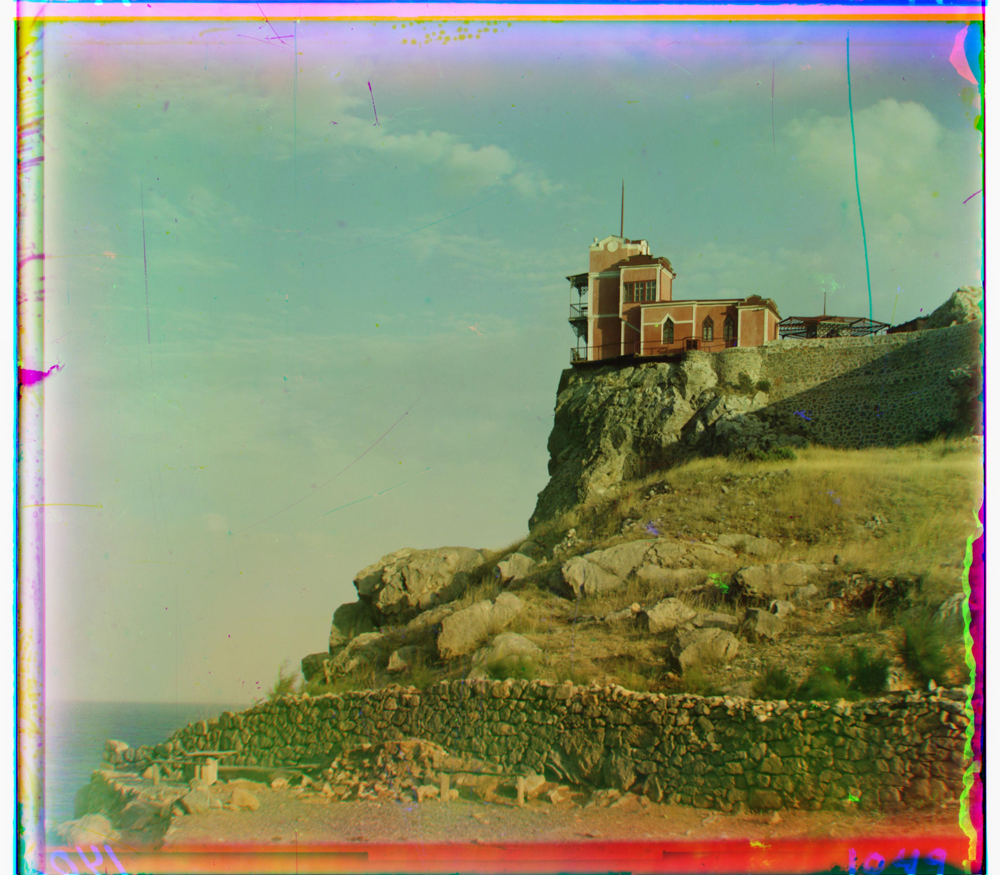Green: (-3, -2), Red: (76, -9)
Lugano
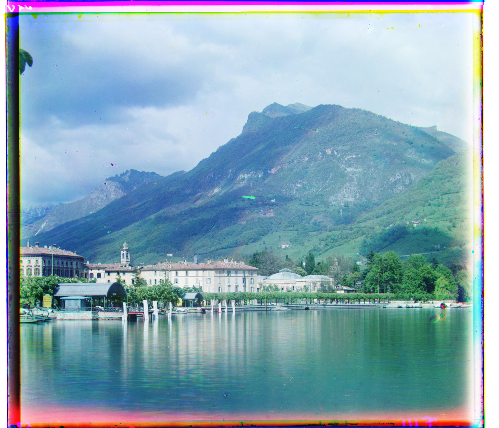Green: (41, -17), Red: (93, -29)
Melons
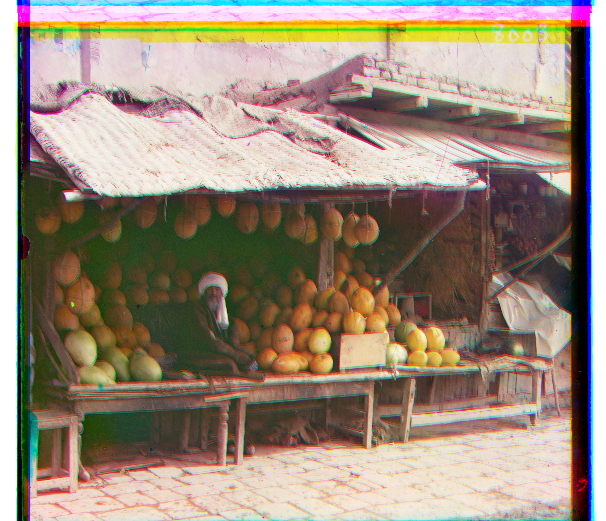Green: (82, 9), Red: (165, 8)
Monastery

Green: (-3, 2), Red: (3, 2)
Self Portrait
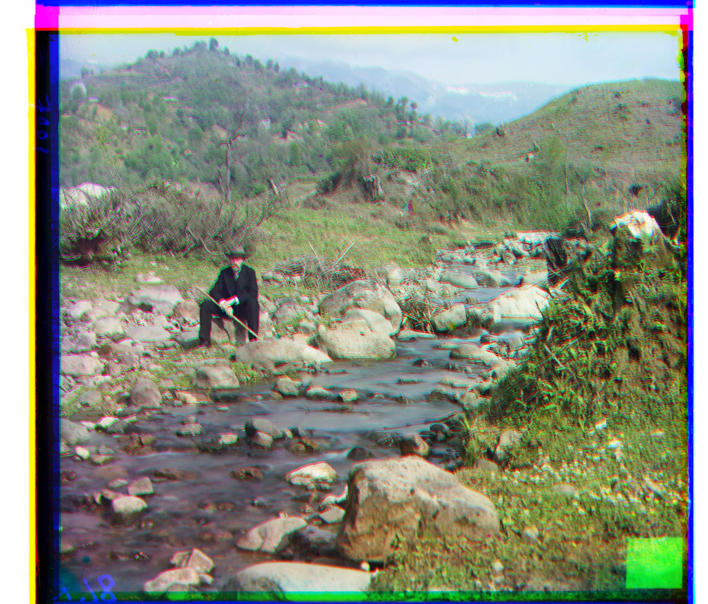Green: (79, 29), Red: (165, 32)
Siren
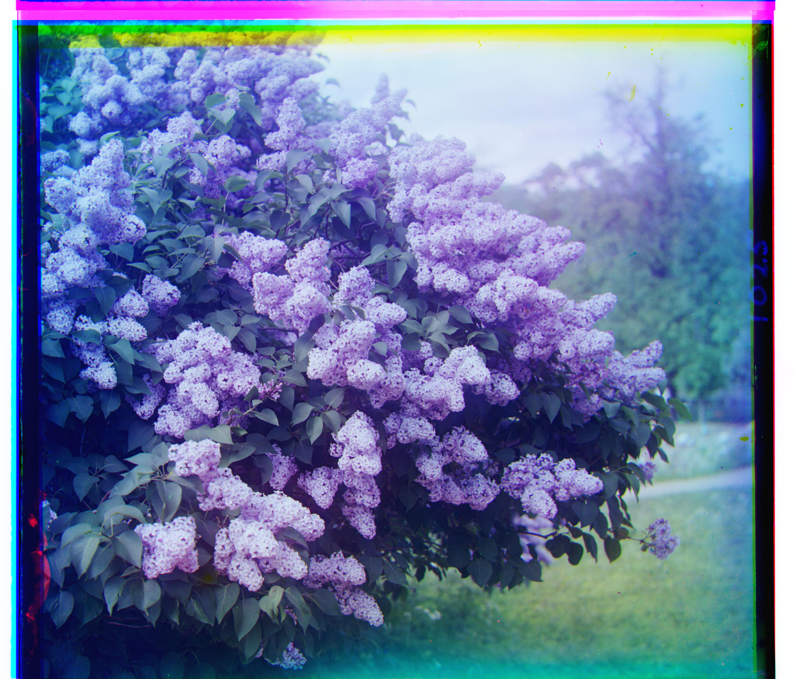Green: (49, -7), Red: (96, -25)
Three Generations
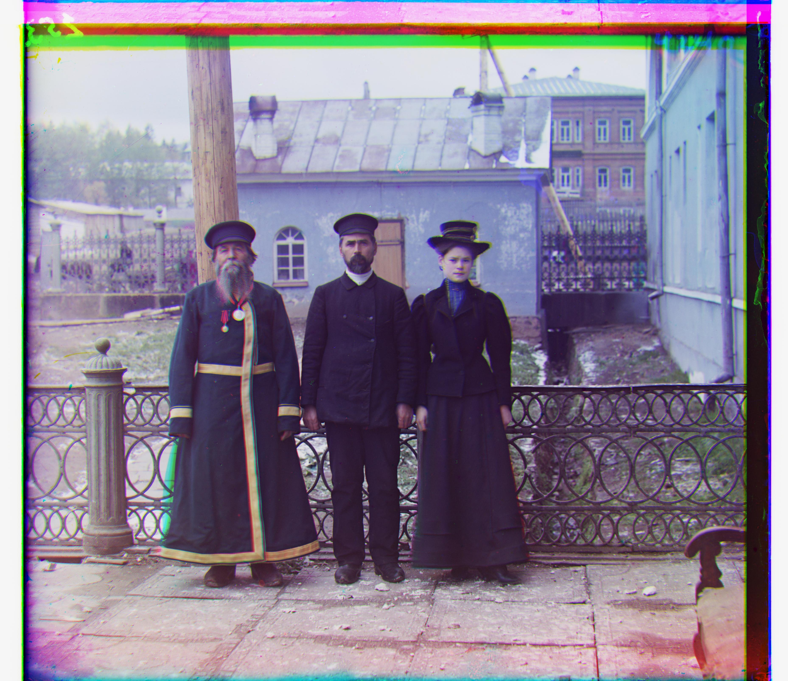Green: (53, 13), Red: (112, 10)
Tobolsk
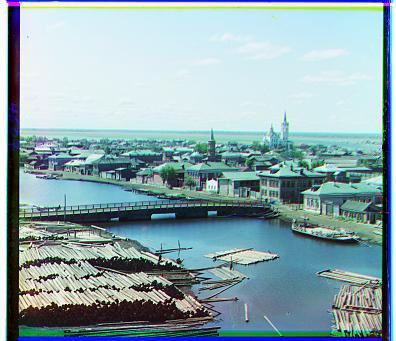Green: (3, 2), Red: (6, 3)
Note: Offsets are given as (x, y) coordinates relative to the blue channel. All .tif images used pyramid depth 3, while .jpg images used depth 0. The Emir image used normalized cross-correlation for better alignment.